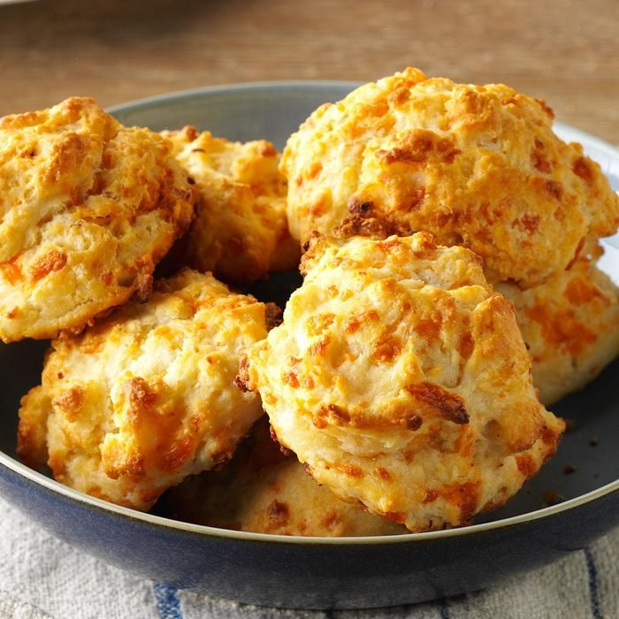

Easy Cheese Biscuits

Ingredients
- 3 cups all-purpose flour
- 3 teaspoons baking powder
- 1 tablespoon sugar
- 1 teaspoon salt
- 3/4 teaspoon cream of tartar
- 1/2 cup cold butter
- 1 cup shredded sharp cheddar cheese
- 1 garlic clove, minced
- 1/4 to 1/2 teaspoon crushed red pepper flakes
- 1-1/4 cups 2% milk
Directions
- Preheat oven to 450°. In a large bowl, whisk flour, baking powder, sugar, salt and cream of tartar. Cut in
butter until mixture resembles coarse crumbs. Stir in cheese, garlic and pepper flakes. Add milk; stir just
until moistened.
- Drop dough by heaping 1/4 cupfuls 2 in. apart onto a greased baking sheet. Bake 18-20 minutes or until
golden brown. Serve warm.
Nurtrition Facts
1 biscuit: 237 calories, 12g fat (7g saturated fat), 32mg cholesterol, 429mg sodium, 26g carbohydrate (2g sugars,
1g fiber), 7g protein.